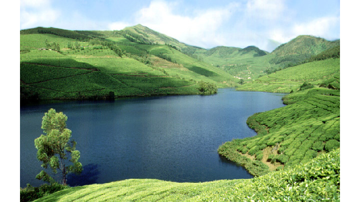
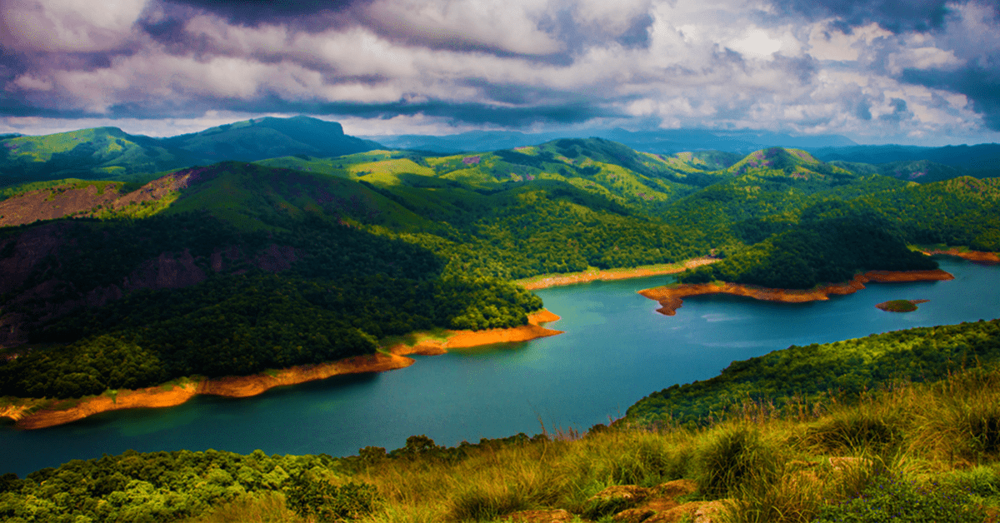

Idukki (ഇടുക്കി)is a district in the Indian state of Kerala. It was constituted on 26 January 1972, by splitting the district of Kottayam into two parts. Its division was earlier headquartered at Kottayam city, but moved to Painavu in June 1976. Idukki district lies amid the Western Ghats of Kerala. Though it is regarded as the second-largest district in the region, it has the lowest population density among the other districts of Kerala, the urban population being higher than the rural. Idukki is rich in forests and also known as the "Spice Garden of Kerala". Till 1998, when Kuttampuzha was added to Ernakulam district, Idukki was the largest district in Kerala.